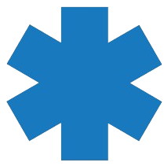

Davi Rios
Software Engineer
 São Paulo, Brazil
São Paulo, Brazil soirivad@outlook.com
soirivad@outlook.com+55(19)98771-6606
Skills
HTML, CSS, Bootstrap, JavaScript, React, Node.js
Python, Kotlin, Java, C, C++, C#
Git/GitHub
SQL, MongoDB, AWS
 Languages
LanguagesEnglish - Advanced
Portuguese - Native
Spanish - Basic